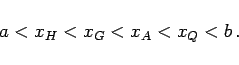

| (1.111) |
Das arithmetische Mittel von n positiven Zahlen ist größer oder gleich dem geometrischen Mittel dieser Zahlen. Das Gleichheitszeichen gilt nur, wenn alle n Zahlen gleich sind.
| (1.112) |
Der Absolutbetrag des arithmetischen Mittels mehrerer Zahlen ist kleiner oder gleich dem quadratischen Mittel dieser Zahlen.
|  | (1.113) |
Dabei bedeuten:
| (1.114) |
(s. auch Mittelwerte).